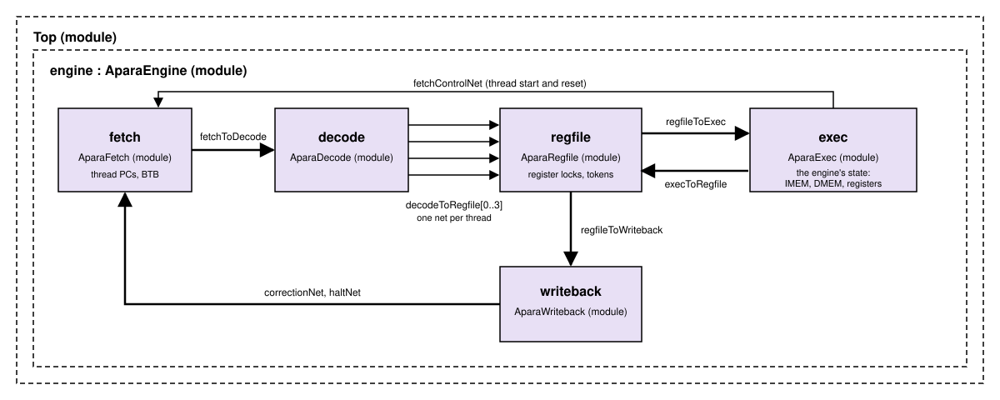

APARA Timing Model¶
The sitar_model of the apara configuration is a cycle-level model of
the engine's pipeline, following the APARA microarchitecture document,
and is the same pipeline sparc_apara uses.
As everywhere in this project, the model keeps function and timing apart. What each bundle does comes from the same C++ class the fast functional model runs, so the two models always compute the same results. The timing comes from the Sitar structure itself: the pipeline's stages are modules, the channels between them are nets, and a bundle's time is spent actually waiting in them, for a free channel, a register, or the divider. It is never computed after the fact. This is what makes the timing model trustworthy for experiments: change a channel depth or a latency, and every effect it has on the rest of the pipeline follows by itself.
The pipeline¶

The engine's five stages, each a module, are joined by nets with the hardware's channel depths: 2 entries, except 1 for EXEC's results and for WRITEBACK's notices to FETCH. Each module takes its inputs in the first half of a cycle and sends its outputs in the second half, so a bundle spends at least one cycle in each stage. A stage whose output channel is full holds its bundle until there is room, and the stages before it then fill up and wait too. This is the hardware's elastic pipeline.
- FETCH
Picks a running thread (round robin), reads the 8-word IMEM line holding its PC, and sends that line's bundles to DECODE, one per cycle and in PC order, before picking another thread. It predicts each bundle's next PC with the branch target buffer (BTB). - DECODE
Decodes a bundle: which registers it reads and writes, how long it will take in EXEC, and whether it needs the divider. It then sends the bundle on to REGFILE, on its thread's own channel. - REGFILE
Holds one waiting bundle per thread. Each cycle it issues one of them (round robin) whose registers are all free, provided a token is free, and locks the registers that bundle will write. When the bundle's result comes back from EXEC, it releases those locks and the token. - EXEC
Executes the bundle, then holds it for its latency. EXEC owns the engine's state: its memories, registers, and threads. It skips bundles fetched on a wrong path. - WRITEBACK
Retires the bundle. It sends FETCH a PC correction when a bundle's next PC was mispredicted, and a notice when a thread has stopped.
A bundle's journey¶
A bundle with no stalls is fetched in some cycle c, decoded in c+1, issued by REGFILE in c+2, and executed in EXEC from c+3. Its result comes back to REGFILE after its latency, and it leaves WRITEBACK one cycle later. So a program of one 1-cycle bundle takes 6 cycles from start to finish. Later bundles overlap with it, so a stream of independent bundles completes at one bundle per cycle.
Timing rules¶
Instruction latency¶
A bundle's time in EXEC is the latency of its slowest instruction, or the time of its memory accesses if that is longer. The latencies come from a table, by instruction class. The defaults:
| Entry | Cycles | Covers |
|---|---|---|
nop any, control any, halt any, misc any, logic any |
1 | $null, branches/calls/returns, $halt, $set $slice $pack, | & ^ ~| ~& ~^ |
arith int<=32, arith fp<=16 |
1 | + - *, scalar and vector |
arith int64 |
2 | |
arith fp32, arith fp64 |
3 | |
shift int<=32 / shift int64 |
1 / 2 | << >> |
dot int<=32, dot fp<=16 / dot int64, dot fp32, dot fp64 |
2 / 3 | |
cast narrow / cast wide |
1 / 2 | narrow: integer to integer, float to integer, floats up to f16 |
vreduce any |
2 | assumed: not in the hardware's table |
cmov any |
1 | assumed: not in the hardware's table |
memory local |
3 | a bundle's DMEM accesses |
divide any, sqrt any |
10 | the designer's figure, to be confirmed |
To try other latencies, pass --latency-file <file> to the apara
simulator. Each line of the file overrides one entry, as <class>
<operands> <cycles>, and # starts a comment:
Data memory¶
DMEM has two banks (address bit 15 selects the bank), each with its own
256-bit port. A bundle's accesses to different banks proceed in
parallel. Accesses to the same bank go one after another, each extra
one adding a cycle (the bankConflictCycles knob). Placing two arrays
that are read together in different banks avoids the conflict.
The divider¶
Integer and float divides and square roots share one divider. A bundle that needs it waits in EXEC until the previous user has finished.
EXEC¶
By default EXEC is internally pipelined: it takes a new bundle every
cycle, and results leave it in order, one per cycle. The pipelined
knob selects instead a stage that holds one bundle for its whole
latency.
Register locks and tokens¶
A bundle waits in REGFILE while any register it reads or writes is locked by an earlier bundle of its thread, that is, until the earlier bundle's result is back. This is how the pipeline keeps a thread's bundles in order without stalling the other threads.
At most 2 bundles are in EXEC at a time, one per REGFILE token. A token comes back with the bundle's result, two cycles after issue for a 1-cycle bundle, so two tokens are exactly enough to issue one bundle every cycle.
Branch prediction¶
The branch target buffer has 256 entries, direct mapped by the low 8 bits of a bundle's PC, and shared by the four threads. Each entry holds a 22-bit tag, a 2-bit counter (0 strongly taken, 3 strongly not taken), and a target. A lookup predicts the entry's target if the tag matches and the counter is below 3, and otherwise the next bundle.
Only PC corrections train the BTB: a correction to a taken branch lowers the counter and sets the target, one to a not-taken branch raises the counter, and a new entry starts at 0 or 3 accordingly.
Calls and returns are predicted the same way, by their BTB entry: a
$return is predicted to go where it went last time. Some consequences
for programs, each measured by a test in validation/apara/predictor/:
- A loop's closing branch mispredicts once per run of the loop, at its exit, once the BTB has learned it.
- A correctly predicted branch never trains its entry. So a loop that
is entered again and again (an inner loop) pulls its counter up by one
at each exit, and after three exits the entry predicts "not taken":
from then on every run of the inner loop mispredicts twice, at its
first pass and at its exit (
nested_loops). - A function called from several places mispredicts its return whenever
the caller changes (
call_sites). - Two branches whose PCs share their low 8 bits share an entry, and
evict each other (
alias).
Mispredicts¶
EXEC compares each bundle's actual next PC with the one FETCH predicted. On a mismatch, the thread's following bundles, already fetched on the wrong path, are skipped (not executed, though their register locks are still released) until FETCH, corrected by WRITEBACK, sends the first bundle of the right path. With one thread, a mispredict costs 5 cycles. With several, the other threads keep the pipeline busy meanwhile. A thread's halting bundle is handled the same way, except that the thread then stays stopped.
Knobs¶
All the timing knobs are set in one place, Top.sitar in apara
(model/system_models/apara/sitar_model/src/Top.sitar) and
System.sitar in sparc_apara. Rebuild after a change.
| Knob | Default | Meaning |
|---|---|---|
engine.fetch.imemDelay |
0 | Cycles between FETCH picking a thread and its IMEM line arriving. |
engine.exec.pipelined |
true | false: EXEC holds one bundle for its whole latency. |
engine.exec.latency.bankConflictCycles |
1 | Cycles per extra same-bank access in a bundle. |
engine.regfile.tokens |
2 | How many bundles may be in EXEC at once. |
engine.regfile.interlock |
true | false: REGFILE ignores its register locks, to show which reads would be hazards without them (see Hazards). Not a hardware option. |
--stats prints the pipeline's counters: bundles fetched, executed, and
skipped, mispredicts, fetches that followed a BTB prediction, the cycles
lost to register locks, to tokens, and to the divider, bank
conflicts, and the two hazard checks (see Performance
Modeling).
Validation¶
The timing model is checked by three suites in validation/apara/,
each count derived by hand from the rules above, and written in the
test's header:
timing/, microbenchmarks with exact cycle counts: one bundle (6 cycles), a stream of bundles at full rate, latency, a read-after-write stall against the independent case, the shared divider, a bank conflict against the same accesses on two banks, a mispredict, and two threads sharing the pipeline.predictor/, exact mispredict counts for loops, nested loops, aliasing entries, and calls and returns.hazards/, the register interlock (see Hazards).
run_tests.py --sitar checks every count exactly. The counts are
derived for the default knob values and latency table, so the suite
checks the timing model at those settings only. Each knob was also
checked by setting it to several values, one at a time: every count
moved by exactly the amount the rules predict. timing/README.md has
those counts, and how to set the knobs back to their defaults
afterwards.
The kernels and C programs of the other suites run on the timing model
too, and their --stats show where a larger program spends its
cycles. For example, an 8x8 matrix product (kernels/matmul_i8) takes
122 cycles on one thread and 112 on four: its memory-heavy bundles stay
in EXEC 3 cycles or more, so the two REGFILE tokens, not the threads,
limit its throughput.
The open items, such as the latencies marked above, EXEC's structure, and the order of same-bank accesses, are listed in Deviations and Findings.